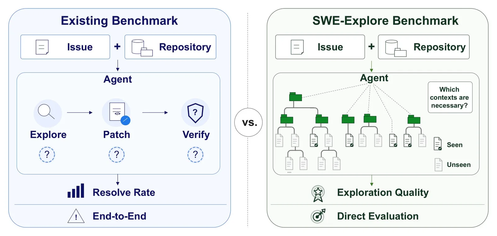
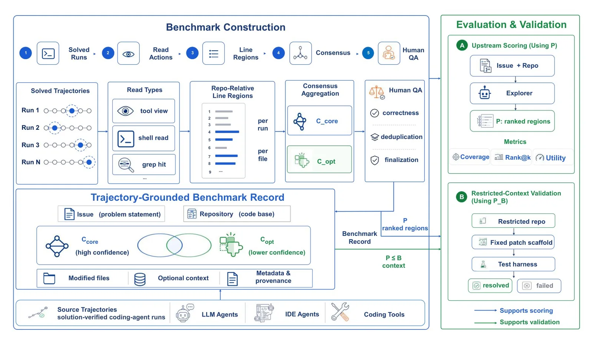

Стандартные тесты для ИИ-агентов, пишущих код, измеряют одно: починен баг или нет. Этот подход скрывает принципиально разные причины неудач. Агент мог никогда не открыть нужный файл. Мог открыть правильный файл, но проигнорировать нужные строки. Мог прочитать всё необходимое и всё равно написать неверный патч. Внешне все три сценария выглядят одинаково — задача не решена.
Международная команда с участием Шанхайского университета Цзяо Тун разработала benchmark SWE-Explore, который изолирует первую фазу процесса — поиск релевантного контекста. Агент получает описание бага и кодовую базу проекта, а затем возвращает ранжированный список участков кода, которые считает важными. Насколько точно этот список совпадает с тем, что реально нужно для починки, — это и есть метрика SWE-Explore.
| Система | Тип | Покрытие файлов | Покрытие строк |
|---|---|---|---|
| Claude Code | Агент общего назначения | высокое | 14–19% |
| Codex | Агент общего назначения | высокое | 14–19% |
| OpenHands | Агент общего назначения | высокое | 14–19% |
| Mini-SWE-Agent | Агент общего назначения | высокое | 14–19% |
| AweAgent | Агент общего назначения | высокое | 14–19% |
| CoSIL | Специализированная система | высокое | значительно выше |
| AutoCodeRover | Специализированная система | точное, консервативное | умеренное |
| OrcaLoca | Специализированная система | мало шума | низкое (много пропусков) |
Чтобы определить «правильный ответ», исследователи применили нестандартный подход. Вручную разметить 848 задач из 203 open-source проектов практически невозможно, поэтому эталон строился из трасс успешных запусков мощных моделей — GPT-5.4, Gemini 3 Pro, Claude Sonnet 4.6 и Kimi K2.6. Участки кода, к которым независимо обращались несколько успешных решений, считались сигналом релевантности. Дополнительный верификационный шаг и ручная проверка закрывали пробелы. Датасет охватывает десять языков программирования; Python доминирует с 547 из 848 задач, за ним следуют Go, JavaScript и Rust.
Датасет содержит 848 задач из 203 open-source проектов на 10 языках; эталон строится из трасс успешных запусков GPT, Gemini, Claude и Kimi.

Результаты сравнения оказались показательными. Традиционный поиск по ключевым словам едва превышает случайный уровень: описание бага вроде «RuntimeWarning on Overflow» чаще встречается в документации и шаблонах проекта, чем в исходном коде. ИИ-агенты выигрывают за счёт пошагового обхода проекта вместо одновременной сортировки всех совпадений.
На уровне файлов агенты работают вполне уверенно — находят нужный исходник и ставят его высоко в ранжировании. Но как только метрика переходит на уровень отдельных строк, картина резко меняется. Пять протестированных агентов — Claude Code, Codex, OpenHands, Mini-SWE-Agent и AweAgent — покрывают лишь 14–19% строк, которые реально важны для починки. Показательно, что замена языковой модели внутри агента практически ничего не меняет: команда прогнала один и тот же агент на шести моделях от OpenAI, Anthropic, Google, Moonshot и Zhipu. Семейство GPT лидирует, но разрыв между файловым покрытием и строковым сохраняется у всех.
Исключением стала исследовательская система CoSIL, которая представляет кодовую базу как граф взаимосвязанных блоков и обходит её структурно. Она показала заметно более высокое покрытие строк по сравнению со всеми остальными участниками теста. Среди специализированных систем локализации AutoCodeRover работает точно, но консервативно, а OrcaLoca генерирует мало шума, но пропускает много нужных мест.
Отдельный эксперимент с управляемым контекстом выявил пороговый эффект. Агенту давали 0, 25, 50, 75 или 100% ключевых участков кода, иногда разбавляя нерелевантными фрагментами. На лёгких задачах починка почти не работала, пока агент видел меньше половины нужных мест, — и резко улучшалась при переходе к 50–75% покрытия. Успех не нарастает постепенно: нужен минимальный набор подсказок, после которого всё складывается. На сложных задачах, превышающих возможности модели, даже полный контекст мало помогает. При этом лишний нерелевантный код мешает значительно меньше, чем недостаток нужного: агент, читающий слишком много, справляется лучше агента, читающего слишком мало.

SWE-Explore появился на фоне нарастающей критики в адрес SWE-bench — основного benchmark для ИИ-агентов в кодинге, созданного около двух лет назад на основе реальных GitHub-issues. Исследование организации METR показало, что менеджеры проектов отвергли бы около половины решений, которые автоматический ревьюер SWE-bench засчитывал как успешные, — часто из-за базовых функциональных ошибок. SWE-Explore атакует ту же проблему с другого угла: вместо того чтобы оспаривать итоговую оценку, он разбирает процесс на составляющие. Код и данные опубликованы на GitHub и Hugging Face.